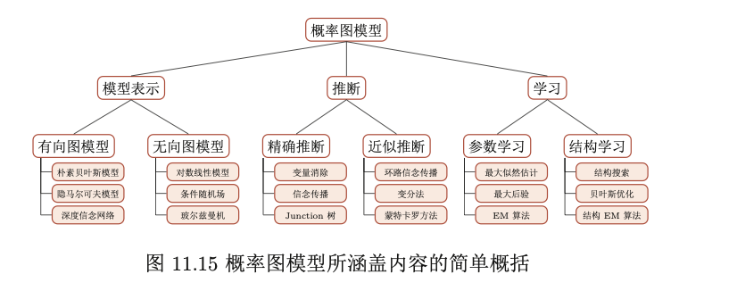

概率图简介
基本概念
概率图模型(Probabilistic Graphical Model，PGM)，简称图模型(Graphical Model，GM)，首先是一种概率模型，其次，它用图结构描述多个随机变量之间的依赖关系，它是研究高维空间中的概率模型的一种有用工具。
概率图模型有三个基本问题: 表示问题，学习问题和推断问题

1. 表示问题
表示问题，即对于一个概率模型，如何通过图结构来描述变量之间的依赖关系。
有向图模型(Directed Graphical model)
有向图模型(Directed Graphical model)，也称为贝叶斯网络(Bayesian Network)，或信念网络(Belief Network，BN)，是指用有向图来表示概率分布的图模型。

很多机器学习模型可以用有向图模型来描述，比如
- 朴素贝叶斯分类器
- 隐马尔可夫模型
- 深度信念网络(sigmoid 信念网络)
无向图模型
无向图模型也称为马尔可夫随机场(Markov Random Field，MRF)或 马尔可夫网络(Markov Network)，是一类用无向图来描述一组具有局部马尔可夫性质的随机向量 X 的联合概率分布的模型。

如果(G,X)满足局部马尔可夫性质， 即一个变量 Xk 在给定它的邻居的情况下独立于所有其它变量，
无向图模型的概率分解
- 因子分解 :无向图中的的联合概率可以分解为一系列定义在最大团上的非负函数的乘积形式。
- 吉布斯分布 :无向图模型和吉布斯分布是一致的。吉布斯分布一定满足马尔可夫随机场的条件独立性质，并且马尔可夫随机场的概率分布一定可以表示成吉布斯分布。
常见的无向图模型:很多经典的机器学习模型可以使用无向图模型来描述，比如
- 对数线性模型(Log-Linear Model)或最大熵模型(Maximum Entropy Model)
- 条件随机场(Conditional Random Field，CRF)
- 玻尔兹曼机
- 受限玻尔兹曼机等
有向图和无向图之间的转换:
- 无向图模型可以表示有向图模型无法表示的一些依赖关系，比如循环依赖;
- 无向图模型不能表示有向图模型能够表示的某些关系，比如因果关系。 ### 2. 推断问题
推断问题，即求条件概率分布，根据贝叶斯公式可以转化为求两个边际概率分布的商
如果我们能求一个更一般的问题：任意变量的边际概率分布问题，那么上面推断问题就迎刃而解了。
求变量的边际概率分布的方法大致分为精确推断和近似推断两类。
精确推断的方法包括变量消除法（Variable Elimination Algorithm）和信念传播（Belief Propagation）方法
图模型中有些变量的局部条件分布可能非常复杂，或其积分无法计算。需要使用数值方法来近似，比如变分法和采样法.
变量消除法
- 变量消除法即将边际概率分布转换为更基础的条件概率以及概率求和的形式，然后从内到外逐次求和
- 变量消除法是动态规划的思想，随着图模型 规模的增长，变量消除法的收益越大。
- 变量消除法的一个缺点是在计算多个边际分布时存在很多重复的计算。比 如在上面的图模型中，计算边际概率 p(x4 ) 和 p(x3 ) 时很多局部的求和计算是一 样的。

信念传播
信念传播算法，也称为和积(Sum-Product)算法 或消息传递(Message Passing)算法，是将变量消除法中的和积(Sum-Product) 操作看作是消息，并保存起来，这样可以节省大量的计算资源。
链式结构上的的信念传播算法

树结构上的信念传播算法：
- 从叶子节点到根节点依次计算并传递 消息;
- 从根节点开始到叶子节点，依次计算并传递消息;
- 在每个节点上 计算所有接收消息的乘积(如果是无向图还需要归一化)，就得到了所有变量的 边际概率。
变分法
变分法(Variational Method)是引入一个变分分布(通常是比较简单的分布，比如高斯分布)来近似复杂的局部条件概率，然后通过迭代的方法计算后验分布。
变分法首先更新变分分布的参数,来最小化变分分布和真实分布的差异(比如交叉熵或 KL 距离)，然后根据变分分布来进行推断。
采样法
采样法(Sampling Method)也叫蒙特卡罗方法(Monte Carlo Method)或 统计模拟方法，是 20 世纪 40 年代中期提出的一种通过随机采样的方法来近似估计一些计算问题的数值解。
采样法通过模拟的方式来采集符合某个分布 p(x) 的一些样本，并通过这些样本来估计和这个分布有关的运算，比如期望等。
如果p比较简单，可以直接使用直接采样方法。如果p比较复杂或者不知道其精确值，就要采用间接的采样策略，如拒绝采样、重要性采样、马尔可夫链蒙特卡罗 采样等。这些方法一般是先根据一个比较容易采样的分布进行采样，然后通过一 些策略来间接得到符合 p(x) 分布的样本。
拒绝采样(Rejection Sampling):也叫接受-拒绝采样(Acceptance-RejectionSampling)：假设原始分布 p(x) 难以直接采样，可引入一个容易采样的分布 q(x)， 一般称为提议分布(Proposal Distribution)，然后以某个标准来拒绝一部分的样本使得最终采集的样本服从分布p(x)。

重要性采样(Importance Sampling):通过引入重要性权重，将分布p(x)下f(x)的期望变为在分布q(x)下f(x)w(x)的期望.如果采样的目的是计算分布 p(x)下函数f(x)的期望，那么实际上抽取的样本不需要严格服从分布p(x)。也可以通过另一个分布，即提议分布q(x)，直接采样并估计。
马尔可夫链蒙特卡罗(Markov Chain Monte Carlo，MCMC): 在高维空间中拒绝采样和重要性采样效率低，
- Metropolis-Hastings算法，以及两个特例Metropolis算法和吉布斯采样(Gibbs Sampling)
- Metropolis算法，假设MH算法中的提议分布是对称的
- 吉布斯采样(Gibbs Sampling)，用全条件概率(Full Conditional Probability)作为提议分布来依次对每个维度 进行采样，并设置接受率为A = 1。
蒙特卡罗的基本思想可以归结为，根据一个已知概率密度函数为 p(x) 的 分布来计算函数 f (x) 的期望
3. 学习问题
概率图模型的学习包括：图结构的学习和参数的学习
参数的学习，即参数估计问题，可分为含隐变量的参数估计和不含因变量的参数估计：
不含隐变量的参数估计：
- 如果图模型中不包含隐变量，即所有变量都是可观测的，那么网络参数一般可以直接通过最大似然来进行估计。
- 有向图模型：所有变量x的联合概率分布可以分解为每个随机变量
的局部条件概率 的连乘形式，其中 为第 k 个变量的局部 条件概率的参数。 - 无向图模型： 所有变量x的联合概率分布可以分解为定义在最 大团上的势能函数的连乘形式。
含隐变量的参数估计：
- 如果图模型中包含隐变量，即有部分变量是不可观测的，就需要用 EM 算法
- EM 算法的应用例子:高斯混合模型。高斯混合模型(Gaussian Mixture Model，GMM)是由多个高斯分布组成的模型，其密度函数为多个高 斯密度函数的加权组合。


概率图模型与机器学习
- 很多机器学习模型都可以归结为概率模型，即建模输入和输 出之间的条件概率分布。
- 图模型提供了一种新的角度来解释机器学习模 型，并且这种角度有很多优点，比如了解不同机器学习模型之间的联系，方便设计新模型等。
- 概率图模型中最基本的假设是条件独立性。图形化表示直观地描述了随机 变量之间的条件独立性，有利于将复杂的概率模型分解为简单模型的组合，并 更好地理解概率模型的表示、推断、学习等方法。
概率图模型与神经网络
概率图模型和神经网络有着类似的网络结构，但两者不同。
- 节点
- 概率图模型的节点是随机变量，其图结构的主要功能是用来描述变量 之间的依赖关系，一般是稀疏连接。使用图模型的好处是可以有效进行统计推 断。
- 神经网络中的节点是神经元，是一个计算节点。如果将神经网络中每个神经元看做是一个binary随机变量，那神经网络就变成一个sigmoid信念网络。
- 变量的含义
- 图模型中的每个变量一般有着明确的解释，变量之间依赖关系一般是人工来定义。
- 神经网络中的单个神经元则没有直观的解释
- 生成模型与判别模型
- 神经网络是判别模型，直接用来分类
- 图模型不但可以是判别模型，也可以是生成模型。生成模型不但可以用来生成样本，也可以通过贝叶斯公式用来做分类。
- 学习方法
- 神经网络参数学习的目标为交叉熵或平方误差等损失函数。
- 图模型的参数学习的目标函数为似然函数或条件似然函数，若包含隐变量则通常通过EM算法来求解。
神经网络和概率图模型的结合：
用神经网络强大的表示能力来建模图模型中的
- 推断问题：比如变分自编码器
- 生成问题：比如生成对抗网络
- 势能函数：比如 LSTM+CRF模型[Lample et al., 2016, Ma and Hovy, 2016]
用图模型的算法来解决复杂结构神经网络中的学习和推断问题
- 图结构神经网络(Graph Neural Network)
参考
- 《神经网络与深度学习》